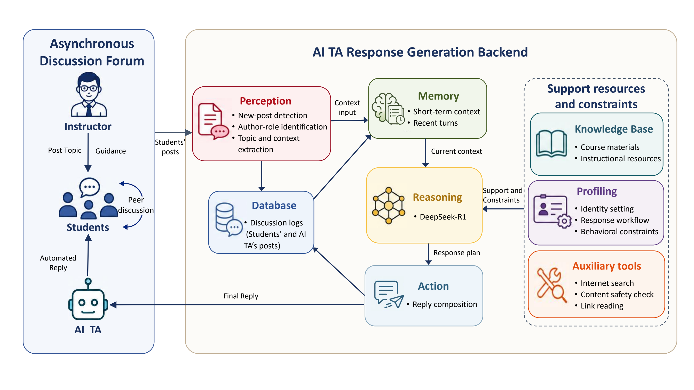

面向异步讨论区的大语言模型助教智能体
- 负责理论框架构建、教学设计、系统开发、平台部署、实证评估与论文撰写等完整研究流程。
- 基于探究社区（CoI）框架设计异步讨论区人工智能助教，重点支持认知临场感、社会临场感与教学临场感。
- 开发基于大语言模型的助教系统，并通过 API 将其集成至在线课程讨论平台。
- 在 5 门大学课程中部署系统，覆盖 300 余名学生。
- 开展为期 10 周的准实验混合方法研究，比较人工智能助教与人类助教支持下的讨论。
- 收集并分析 CoI 问卷、讨论区文本、反思帖与半结构化访谈资料。
- 发现人工智能支持讨论中的“感知—行为”差距：人工智能助教提升了学生感知到的 CoI 临场感，但对深层协作探究行为的影响仍有限。
- 形成硕士学位论文、GCCCE 2026 已录用会议论文及在审英文期刊论文等多项研究成果。
